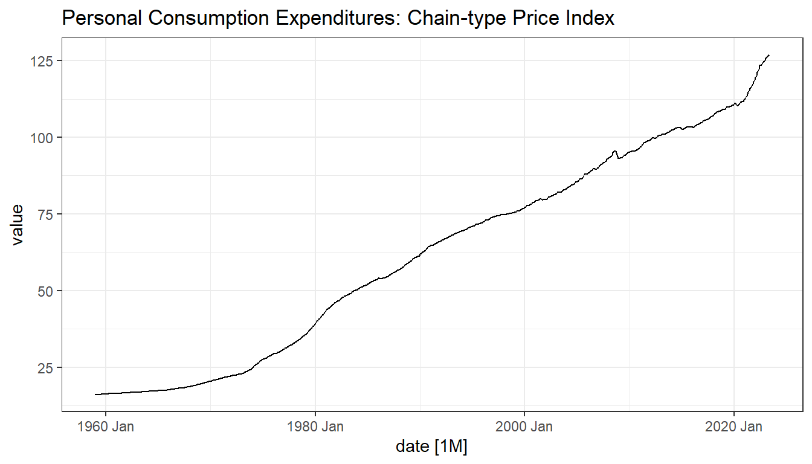
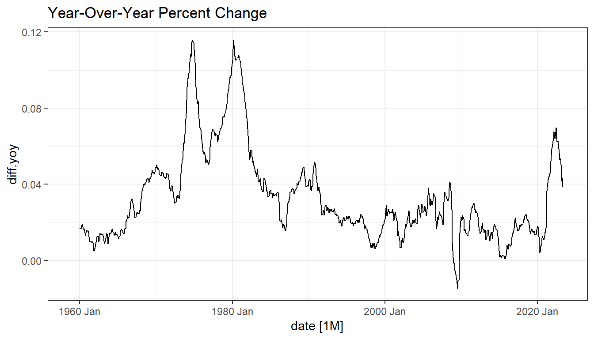
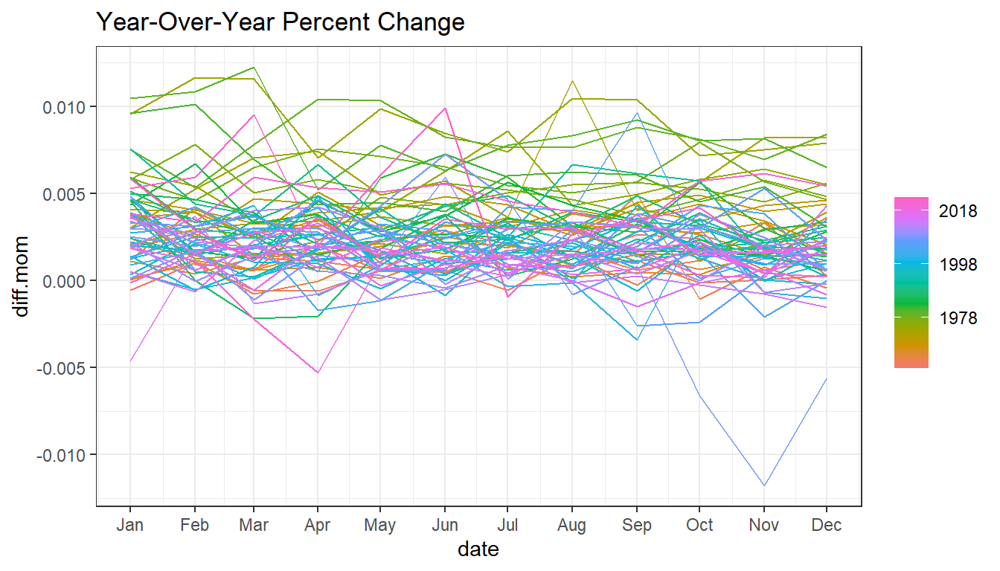
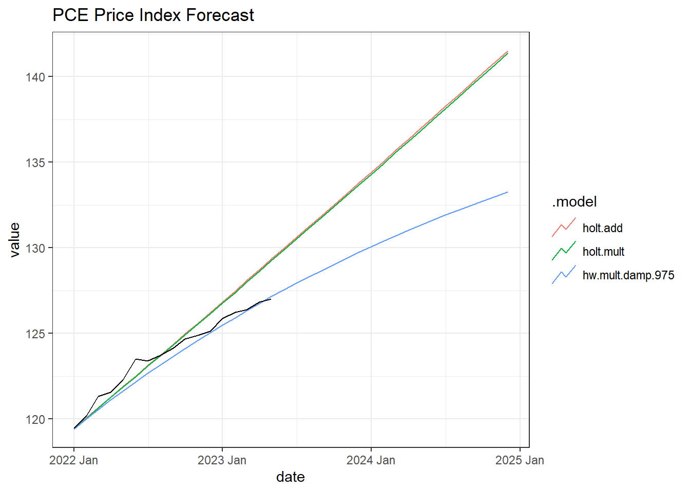
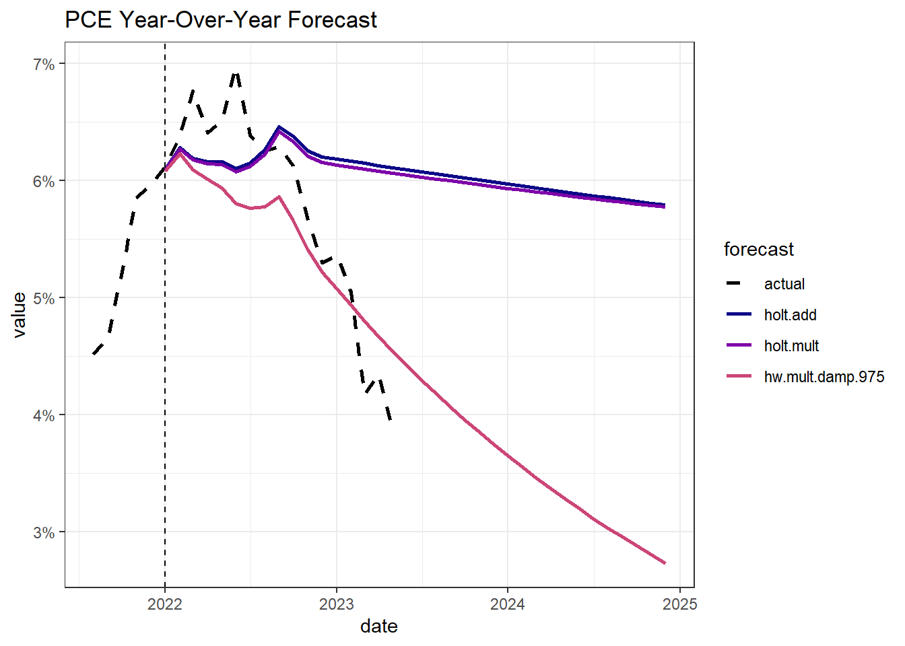

knitr::opts_chunk$set(
echo = TRUE,
message = FALSE,
warning = FALSE
)
library(tidyverse)
library(fredr)
library(fpp3)
theme_set(theme_bw())Week 2 Discussion
Setup
Preliminary Analysis
Get PCE Inflation Data
data <- fredr_series_observations("PCEPI") %>%
mutate(date = yearmonth(date)) %>%
tsibble(index = date, key = series_id) %>%
mutate(
diff.yoy = value / lag(value, n = 12) - 1,
diff.mom = value / lag(value, n = 1) - 1
)
train <- data %>%
filter(year(date) < 2022)
test <- data %>%
filter(year(date) >= 2022)Data Exploration
Time Plots
data %>%
autoplot(value) +
ggtitle("Personal Consumption Expenditures: Chain-type Price Index")
data %>%
autoplot(diff.yoy) +
ggtitle("Year-Over-Year Percent Change")
Seasonality Plots
No apparent seasonality.
data %>%
gg_season(diff.mom) +
ggtitle("Year-Over-Year Percent Change")
Modeling
ETS Models
I’m using an additive Holt model, a multiplicative Holt model, and a damped multiplicative Holt model. My approach was a bit of trial and error here but I found a phi = .975 to be a reasonable inflation expectation.
# Guerrero lambda
lambda <- train %>%
features(value, features = guerrero) %>%
pull(lambda_guerrero)
fit <- train %>%
model(
"holt.add" = ETS(box_cox(value, lambda) ~ error("A") + trend("A") + season("N")),
# "hw.add" = ETS(box_cox(value, lambda) ~ error("A") + trend("A") + season("A")),
"holt.mult" = ETS(box_cox(value, lambda) ~ error("M") + trend("A") + season("N")),
# "hw.add.damp" = ETS(box_cox(value, lambda) ~ error("A") + trend("Ad") + season("N")),
# "hw.mult.damp.98" = ETS(box_cox(value, lambda) ~ error("M") + trend("Ad", phi = .98) + season("N")),
# "hw.mult.damp.99" = ETS(box_cox(value, lambda) ~ error("M") + trend("Ad", phi = .99) + season("N")),
"hw.mult.damp.975" = ETS(box_cox(value, lambda) ~ error("M") + trend("Ad", phi = .975) + season("N"))
)The two multiplicative methods minimize the AICc.
glance(fit)# A tibble: 3 × 10
series_id .model sigma2 log_lik AIC AICc BIC MSE AMSE MAE
<chr> <chr> <dbl> <dbl> <dbl> <dbl> <dbl> <dbl> <dbl> <dbl>
1 PCEPI holt.add 5.41e-4 340. -671. -670. -647. 5.38e-4 0.00193 1.55e-2
2 PCEPI holt.mu… 1.33e-6 505. -1001. -1001. -977. 5.38e-4 0.00191 8.48e-4
3 PCEPI hw.mult… 1.33e-6 504. -997. -997. -974. 5.33e-4 0.00197 8.53e-4Forecast
The models were trained on data prior to 2022, just before inflation levels peaked which will make for a good model comparison. The forecast period is 2022-2024. I extended this beyond today because we should expect inflation levels to converge to 2% in the long-run.
The damped model does perform significantly better than the other two models.
fx <- fit %>%
forecast(h = 36)
fx %>%
autoplot(
test,
level = NULL
) +
ggtitle("PCE Price Index Forecast")
Calculating the year-over-year inflation rate gives the following chart.
fx.diff <- full_join(
data %>%
select(date, value) %>%
rename(actual = value) %>%
as_tibble(),
fx %>%
select(.model, value, .mean) %>%
hilo(level = c(85)) %>%
select(.model, .mean) %>%
pivot_wider(names_from = .model, values_from = .mean) %>%
as_tibble(),
by = "date"
) %>%
arrange(date) %>%
mutate(
across(-c(date, actual), \(x){
ifelse(year(date) >= 2021, coalesce(x, actual), NA)
}),
across(-date, \(x){ifelse(year(date) >= 2021,x / lag(x, n = 12) - 1, NA)}),
date = as.Date(date)
) %>%
filter(date >= today() - years(2), date <= today() + years(10)) %>%
pivot_longer(-date, names_to = "forecast") %>%
filter(!is.na(value))
fx.diff %>%
ggplot(aes(x = date, y = value, color = forecast, linetype = forecast)) +
geom_line(size = 1) +
geom_vline(xintercept = ymd("2022-1-01"), linetype = "dashed") +
scale_y_continuous(labels = scales::label_percent()) +
scale_color_manual(values = c("black", viridis::plasma(5))) +
scale_linetype_manual(values = c("dashed", rep("solid", 5))) +
ggtitle("PCE Year-Over-Year Forecast")
Though significantly better than the non-damped approaches, the damped model approaches 1% in the long run which is lower than we’d expect. There is a trade-off with the phi parameter which adjusts this long-term convergence. As phi approaches 1, the damped model approaches the forecasts of the non-damped, providing a worse forecast in the short-term. The selection of .975 aims to provide value in the short-term while not providing a bad forecast in the long-run, though it must be taken with some skepticism.
The problem with the non-damped models is that they assume a constant trend across time. Exogenous factors play a role in the determination of inflation rates. With the Federal Reserve having raised rates to suppress inflation, this action would invalidate the constant trend assumption given in the non-damped models.